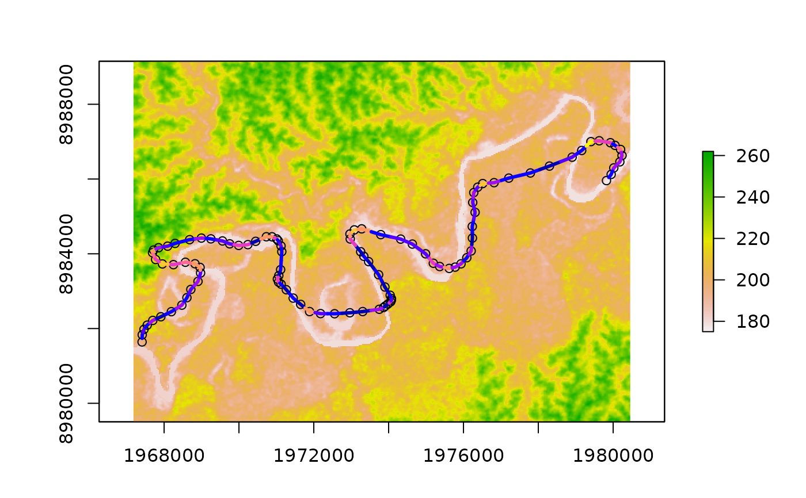
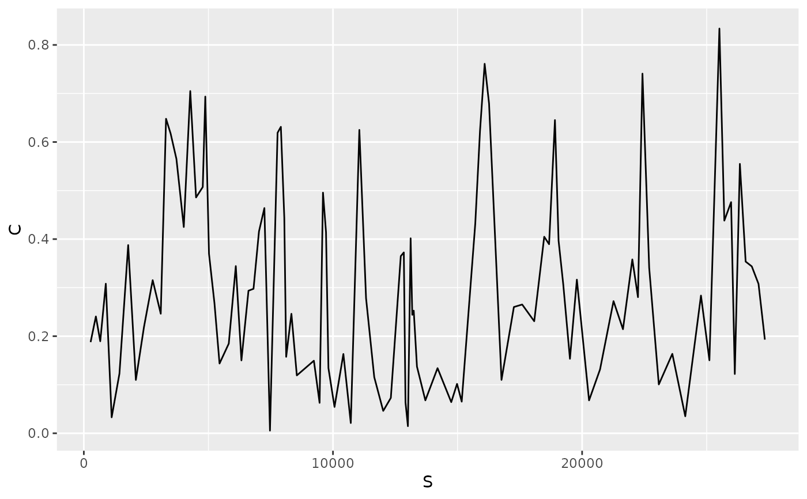

curvature.RdCalculates the curvature at each point of a series
curvature(points)a sf object with multiple features with POINT geometry
a sf object with multiple features with POINT geometry and attributes corresponding to curvilinear coordinate (S) and curvature (C)
points=st_read(system.file("data/points.shp", package="morphRiver"))
#> Reading layer `points' from data source
#> `/home/lvaudor/R/x86_64-pc-linux-gnu-library/4.3/morphRiver/data/points.shp'
#> using driver `ESRI Shapefile'
#> Simple feature collection with 101 features and 1 field
#> Geometry type: POINT
#> Dimension: XY
#> Bounding box: xmin: 1968189 ymin: 8980512 xmax: 1979458 ymax: 8988157
#> Projected CRS: Mercator_2SP
rasterDEM=raster(system.file("data/rasterDEM.tif", package="morphRiver"))
plot(rasterDEM)
plot(points,
add=TRUE, col=1)
rcurv=curvature(points) %>% points_to_linestring()
plot(rcurv["C"],
add=TRUE, lwd=3)

# Curvature as longitudinal signal
library(ggplot2)
ggplot(data=rcurv, aes(x=S,y=C))+
geom_path()
